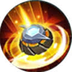

Home
Ưng trạm
Kích hoạt: Elsu cài đặt một thiết bị Ưng trạm tại chỗ giúp cung cấp tầm nhìn trong phạm vi 600 - 1000 khoảng cách (tăng theo cấp tướng). Ưng trạm tồn tại trong 300 giây, có thể tích trữ tối đa 2 cái, và đặt tối đa 3 cái trên bản đồ. Khi đứng trong phạm vi của Ưng trạm, Elsu được tăng thêm sát thương mỗi đòn bắn lên quái rừng (tối đa 250), nhưng sẽ bị vô hiệu hoá khi tướng địch giẫm lên. Nội tại: Đứng tại chỗ mỗi giây giúp Elsu tăng xuyên giáp (tăng theo cấp tướng), tối đa cộng dồn 5 lần. Nếu Elsu di chuyển sẽ không được làm mới nội tại nữa.